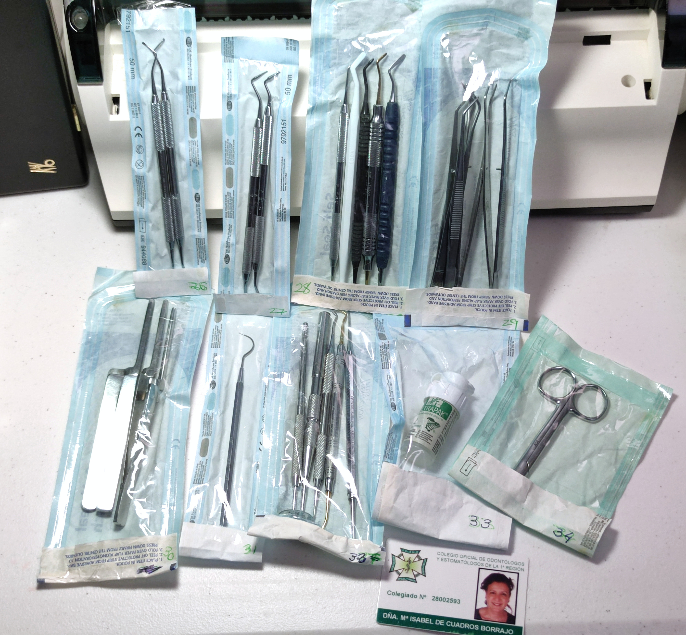

Instrumental Conservadora
2 Cucharillas de legrado o excavador dental Bonfanti BBX-2 #26 2 Condensador de amalgama C7 y Z2 Hu-Friedy #27 5 Espátulas composite: 1 U3 Hu-Friedy, 1 de GDSFH3,1 de Ivoclar Vivadent OptraSculpt, 1 Premier USA S/M, 1 de Voco #28 4 Pinzas: 2 de Stoma 5024, 1 ASA 0601-3, 1 HS 100-3313 #29 3 Pinzas Papel Articular ASA Dental #30 1 Sonda Maillefer n 6 #31 2 Mangos de espejos y 3 instrumentos deteriorados #32 1 Hilo retractor Ultrapak#2 #33 1 Tijera ASA 5600-2 #34 2 Pistolas de composite #35




100